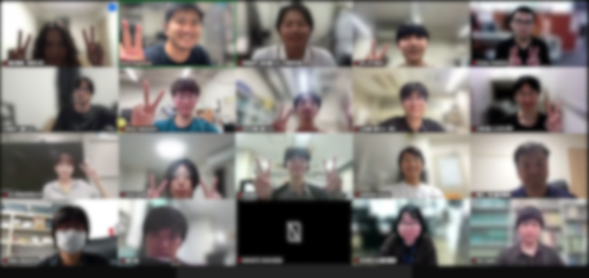
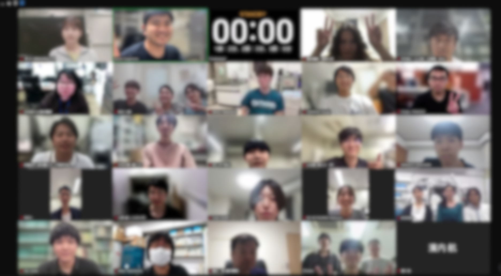
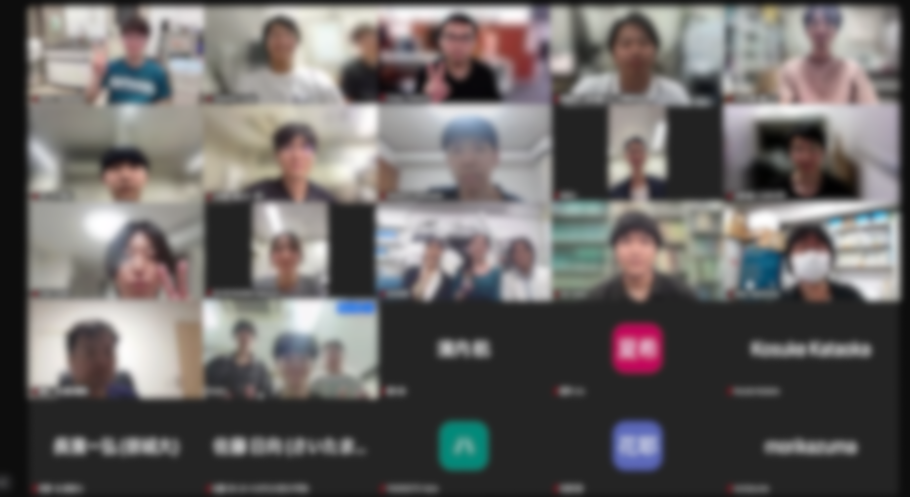

第1回 応動昆 若手の会 フラッシュトーク交流会を開催しました
2026.07.09
応動昆若手の会主催の交流企画 「第1回 応動昆 若手の会 フラッシュトーク交流会」 を開催しました。
本交流会は、学生や若手研究者が気軽に研究内容を共有し、新たなコネクションを作ることを目的として企画しました。
企画概要
- タイトル
- 第1回 応動昆 若手の会 フラッシュトーク交流会
- 開催日時
- 2026年7月09日（木）18:30〜21:30
- 開催場所
-
Zoomによるオンライン開催
- 講演形態
-
発表者は2～3分で発表。その場での質疑応答はなし。
発表後には少人数で分かれ交流会を行い、自己紹介や研究についての交流を行いました。 - 参加人数
- 42名
当日の様子
当日は多くの学生・若手研究者にご参加いただき、それぞれが自身の研究の魅力を時間いっぱい語りました。 その後の交流会では、多様な観点から活発な意見交換が行われました。


